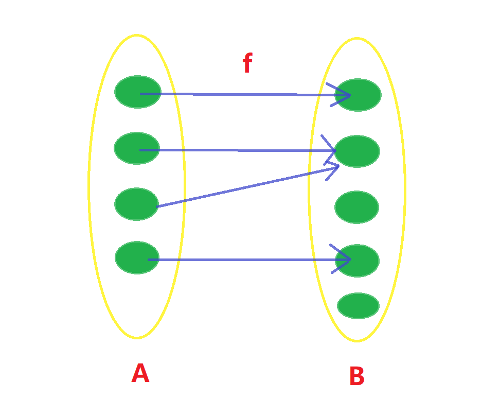
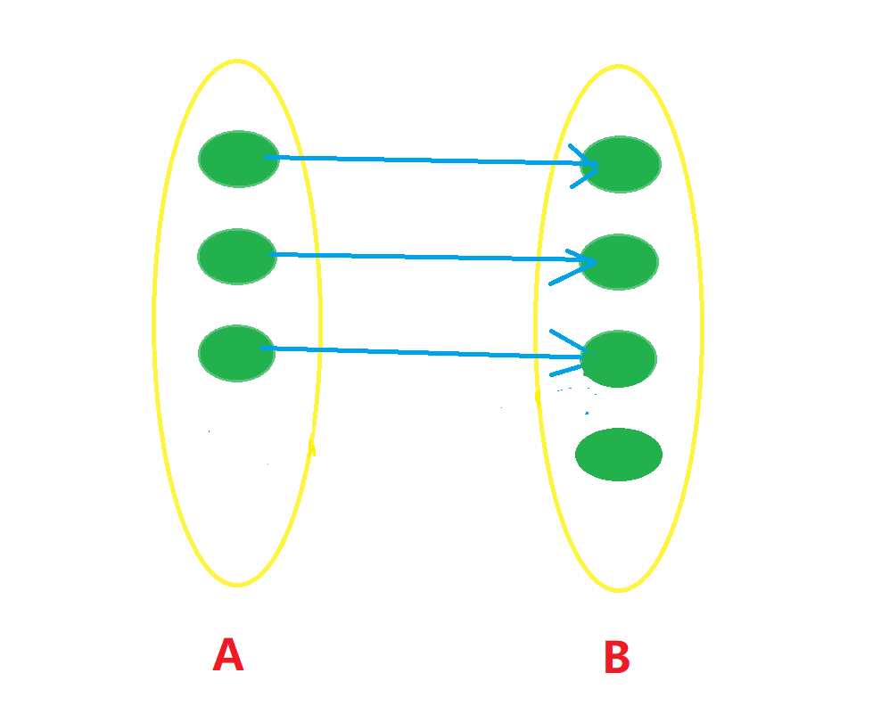
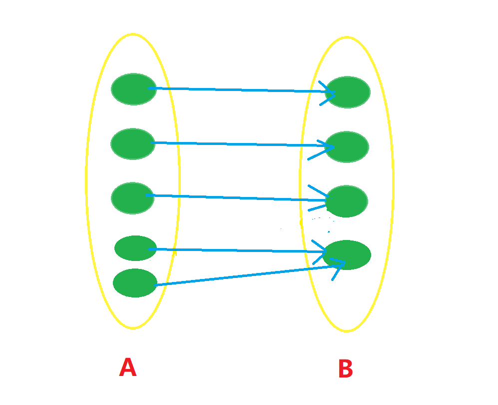
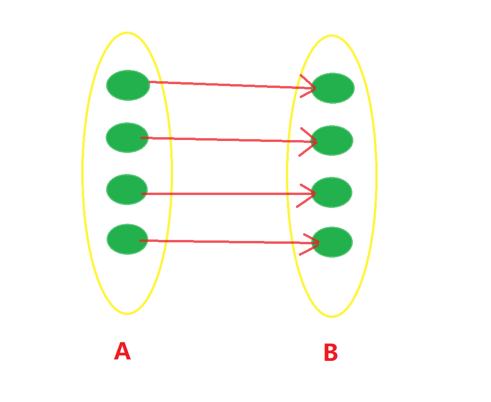

infinity
last modified: 22-09-14 18:21:28本文是参考了《实变函数与泛函分析》第一章写出的科普文，也希望能让各位对“有限”与“无限”的区别与联系有一个更数学的认识。 有限其实已经为我们所熟知了。但很多人碰到“无穷”这个概念时常常会感到十分困惑：无穷大是什么？无穷大的量之间该如何比较？本篇文章将带你走进这些问题的数学研究。
集合 #
集合就是把一类不相同的事物聚集在一起。比如把三个人堆在一起， \(A=\{张三，李四，王五\}\) 就构成一个集合，全体自然数堆在一起， \(\mathbb{N}=\{0,1,2,...\}\) 也构成一个集合。集合中的每个事物叫做元素，元素可以是一本书，一个人，或者一粒沙子，总之什么都可以。对于一个元素 \(x\) ，它如果在集合 \(S\) 中，就叫做 \(x\) 属于集合S,记作 \(x\in S\) 。反之，若 \(x\) 不在集合中，则 \(x\) 不属于 \(S\) ， \(x\notin S\) 。
元素与集合之间存在“属于”或“不属于”的关系，而集合与集合之间则可以比较。比如集合A包含B，换言之B是A的子集，说的就是 \(\forall a\in B,a\in A\) ，记作 \(B\subseteq A\) ,如果B和A不相同，则B是A的真子集， \(B\subset A\)
显然，有些集合的元素个数是有限的，比如上面的 \(A\) 就只有3个元素，这叫做有限集，是我们熟悉的情况；但也有些集合元素个数无限，比如自然数集 \(\mathbb{N}\) 和实数集 \(\mathbb{R}\) 。这些叫做无限集。
笛卡尔积 #
假设我们有两个集合 \(A,B\) ，从 \(A\) 中取出一个元素 \(a\) ，再从 \(B\) 中取出一元素 \(b\) ，它们的有序对 \((a,b)\) 构成的集合称作集合 \(A,B\) 的笛卡尔积笛卡尔积，记作 \(A\times B\) 。 用数学语言描述，就是： \[A\times B = \{(a,b)|\forall a\in A,b\in B\}\] 笛卡尔积的使用也很常见。比如， \(\mathbb R\) 表示实数，那么 \(\mathbb R\times \mathbb R\) 就是二维欧式空间， \(\mathbb R^n =\{(x_1,x_2,\cdots,x_n)|x_i\in \mathbb R,1\le i\le n\}\) 是n维欧式空间。
幂集 #
提问：集合的每个成员是元素，既然元素可以是任何事物，那这元素可以是一个集合吗？
当然可以啦！比如这个： \(C=\{\{1,2,3\},\{2,3\},\{0\}\}\) ，就是一个"自然数集 \(\mathbb{N}\) 的一些子集构成的集合"。
如果你没读懂上面这句话的话，可以多读几遍。
如果你读懂了，那我们就可以介绍什么是幂集了。
一个集合 \(A\) 的幂集就是"A的所有子集构成的集合"，记作 \(2^A\) 。 显然，空集和A自身都是A的子集， \(\emptyset \in 2^A,A\in 2^A\) 我们为什么用这么一个符号来表示幂集呢？一个直观的想法是，如果 \(A\) 是一个有限集，元素个数记作 \(|A|\) ，那么幂集所有元素是 \(|A|\) 个“取”和“不取”两种选择的排列，所以元素个数是 \(|2^A|=2^{|A|}\)
映射 #
设 \(X,Y\) 是两个非空的集合，若对于每个 \(x\in X\) , 存在唯一的 \(y\in Y\) 与之对应，则称这个对应为 \(X\) 到 \(Y\) 的映射。并把 \(x\) 叫原像， \(y\) 叫映像
若用 \(f\) 来表示这个映射，我们一般把这个映射记成 \[f:X\to Y\\ y=f(x)\]
考虑两个有限集合之间的映射，一般情况是像这样：  根据映射的定义，A中所有原像都存在映像，但并非B中所有元素都存在原像，也并非所有映像都只对应一个原像。 如果我们再加入一些条件，比如 \(f(a)\ne f(b),\forall a,b\in A且a\ne b\) ，那我们称这时的映射为单射,像这样：  如果在映射基础上加入条件：B中任何元素都存在原像，那我们称这个映射为满射，像这样： 
如果映射既是单射又是满射，我们称其为一一对应。像这样：  这时，我们称集合 \(A,B\) 之间存在一一对应。 一一对应性质很好，因为我们可以直接构造逆映射 \(f^{-1}\) ，将B中的元素一一满映射到A中。并且，如果 \(f:A\to B,g:B\to C\) 都是一一对应，那么 \(g\circ f:A\to C\) 也是一一对应。也就是说，一一对应还可以像一条链一样，将多个集合串联起来，链上的任何两个集合之间都存在一一对应。
势 #
有了前面的基础，我们可以试着去比较不同集合之间的“大小”。这里的集合既包括有限集，也包括了无穷集。 对于有限集，比较大小是十分简单的，我们只需要数元素的个数就可以了；但对于无穷集，这就不适用了。我们还需要除了“数”之外的另一种方法。
根据上面的知识，判断两个集合元素个数是否相等，我们可以看是否能在两个集合之间建立一一对应关系。 显然，对于有限集，元素个数相等必然能建立一一对应。我们可以将这种方法推广到无穷集。
设 \(A,B\) 是两个集合，如果存在一个从 \(A\) 到 \(B\) 的一一对应，则称集合 \(A\) 与 \(B\) 对等，记作 \(A\sim B\)
显然，对等关系是一种等价关系，它满足三条基本的性质：
- 自反性： \(A\sim A\)
- 对称性： \(A\sim B\ \to\ B\sim A\)
- 传递性： \(A\sim B,B\sim C\to\ A\sim C\)
如果两个集合对等，就称它们有相同的势(基数)。用 \(|A|\) 来表示集合 \(A\) 的基数。若存在一个从A到B的单射(A对等于B的某个子集)，则规定 \(|A|\le |B|\) 。若 \(|A|\le |B|\) 且 \(|B|\ne |A|\) ，则记作 \(|A|<|B|\) 势是自然数的推广，而势不等式可以看作是自然数顺序关系的推广。对于两个势 \(\alpha,\beta\) ,总有 \(\alpha<\beta,\alpha=\beta,\alpha>\beta\) 三者之一成立。
这波推广看上去如此和谐…but wait,真的有这么丝滑吗(bushi)？ 我们来看两个例子：
a.自然数集 \(\mathbb N=\{0,1,2,3,\cdots\}\) 和偶数集 \(2\mathbb N=\{0,2,4,\cdots\}\) 之间存在一一对应关系 \[f:\mathbb N\to 2\mathbb N\\ x\to 2x\] 这意味着，自然数集对等于偶数集，你可能觉得很困惑，明明 \(2\mathbb N\subset \mathbb N\) ,为什么两个集合会是对等的呢(oﾟvﾟ)ノ？ 但是，这正是无穷集有趣的地方啊~(￣▽￣)" 与之相似，全体整数 \(\mathbb Z\) ，甚至全体有理数 \(\mathbb Q\) 都是与自然数集 \(\mathbb N\) 等势的！读者不妨尝试一下，如何构造这样的一一对应。
b.区间 \((-1,1)\) 和实数集 \(\mathbb R\) 对等,因为我们可以构造一一对应 \[f:(-1,1)\to \mathbb R\\ x\to \tan \frac \pi 2 x\] 这个函数在 \((-1,1)\) 上是单调上升的连续函数，值域为 \((-\infty,\infty)\) ，所以构成了一一对应。
有两种无穷集的势是常见的。一种是自然数集的势，记作 \(|\mathbb N|=\aleph_0\) ，与之对等的集合称为可列集/可数集；另一种是实数集的势 \(|\mathbb R|=c\) ,与它对等的集合称为具有连续势。
之所以把与 \(|\mathbb N|\) 对等的集合叫可列集，是因为可以把集合中的所有元素用正整数“标号”： \(A=\{x_1,x_2,\cdots,x_n,\cdots\}\) ,而有连续势的集合就做不到这一点。
看到这里，简单总结一下就是：一个无穷集合的个数是“无穷大”，这些“无穷大”有不一样的类型，并且可以进行大小比较。但我们还是有一些疑问：这些“无穷”的运算关系如何呢？是否有一个“最大”的“无穷”，它比其他的“无穷”都要“大”呢？
可列集的运算 #
首先,我们来看看可列集的性质，和可列集之间的运算对势的影响。
任何无穷集合包含一个可列子集
证明思路很简单：从无穷集取一个元素 \(x_0\) ， \(A/\{x_0\}\) 还是无穷集；依次取 \(x_1,x_2,...,x_n,...\) ，构成的集合就是无穷集A的一个可列子集
可列集合无穷子集仍是可列的
比如， \(2\mathbb N\) 是 \(\mathbb N\) 的一个无穷子集，它也是可列的
可列集和有限集/可列集的并集是可列集
用公式表示就是： \[n+\aleph_0=\aleph_0;\aleph_0+\aleph_0=\aleph_0\]
可数（无穷）个有限集或可列集的并是可列集
用公式表示就是： \[\sum_{i=1}^{\infty}\aleph_0=\aleph_0\]
有限个可列集的笛卡尔积是可列集
一定注意，这里只能是有限个！下面我们就会看到，可数个可列集的笛卡尔积不一定是可列集。 用公式表示就是： \[\aleph_0\times\aleph_0=\aleph_0; \prod_{i=1}^n \aleph_0 = \aleph_0\] 根据有限集时集合运算之后集合元素个数的变化关系，我们也可以类似地定义无穷集情况下相对应的符号：
定义：设有集合与势 \(|A|=\alpha,|B|=\beta\) ，笛卡尔积集合的势写作 \(|A\times B|=\alpha\cdot \beta\) ，n个相同势的笛卡尔积写成次幂形式： \(\alpha\cdot\alpha\cdot\ \cdots\ \cdot \alpha=\alpha^n\) ；全体A到B的映射构成的集合记作 \(B^A\) , \(|B^A|=\beta^\alpha\) ；如果 \(A\cap B=\emptyset\) ,则 \(|A\cup B|=\alpha+\beta\) ；A的幂集的势 \(|2^A|=2^\alpha\)
无限集还有很多不符合常理的性质，比如
最大的无穷集？ #
我们再来看另一个问题：是否有最大的无穷集呢？为了回答这个问题，我们先来看几个引理：
引理：区间 \((0,1]\) 不是可列集。
如果它是可列集，那么就存在一一对应 \(f:\mathbb N\to (0,1]\) ，将 \(f(n)\) 用十进位小数表示： \[f(n)=0.a_{n_1}a_{n_2}\cdots a_{n_k}\cdots\] 证明：我们规定，上式可能从某位开始全为9（根据极限的规则，全9=全0+向上进位1），但不允许从某位开始全为0. 构造这样一个数： \(x=0.b_1b_2\cdots b_n\cdots\) ，如果 \(a_{n_n}=1\) ，取 \(b_n=2\) ,反之取 \(b_n=1\) ；总之， \(b_n\) 的选取满足： \(b_1\ne a_{1_1},b_2\ne a_{2_2},...,b_n\ne a_{n_n},...\) 容易得知， \(x\in (0,1]\) ，但这样一串数不等于任何一个 \(f(n)\) ，因此推出矛盾。所以 \((0,1]\) 不可列。
下面这个引理则解释了连续势 \(c\) 和 \(\aleph_0\) 的关系：
引理： \(2^{\aleph_0}=c\)
证明： \([0,1]\) 和 \((0,1]\) 一样，具有连续势 \(c\) ，我们只需要找到 \(2^{\mathbb N}\) 与 \([0,1]\) 之间的一一对应就可以了。 对于 \(2^{\mathbb N}\) 中的任意一个元素A，构造一个取值为0或1的、无限长的序列 \(\{x_0,x_1,\cdots,x_n,\cdots\}\) 如果自然数 \(n\in A\) ，则 \(x_n=1\) ,否则 \(x_n=0\) 。这样，自然数集的幂集与全部的 \({0,1}\) 取值的序列 \(\{0,1\}^{\mathbb N}\) 存在一一对应。 举个例子， \(\mathbb N\in 2^{\mathbb N}\) ,对应的序列是 \(\{1,1,1,\cdots,1,\cdots\}\) ,而空集对应的序列是全0。 而全体序列与 \([0,1]\) 存在一一对应: \[\{x_0,...,x_i,...\}\to\sum_{i=0}^\infty \frac{x_{i}}{2^{i+1}}\] 因此自然数集的幂集与具有连续势的集合存在一一对应，即 \(2^{\aleph_0}=c\)
最后压轴登场的定理，则能告诉我们，是否存在最大的“无穷”：
无最大基数定理：若A是非空集合，则集合A与其幂集 \(2^A\) 不对等
证明：假设 \(A\sim 2^A\) ，则存在一一满映射 \(f:A\to 2^A\) 构造集合 \(B=\{x\in A|x\notin f(x)\}\) ,容易看出B是A中一些元素构成的集合，因此它是 \(2^A\) 中的元素， \(B\in 2^A\) 。 由于 \(f\) 是满射，所以 \(A\) 中一定存在原像 \(y\) ，使得 \(f(y)=B\) 下面我们考虑命题 \(y\in B\) 的真假。 若命题为真， \(y\in B\) ，但B中的元素应该满足 \(y\notin f(y)=B\) ，矛盾； 若命题为假， \(y\notin B=f(y)\) ，根据集合B的定义， \(y\) 应该是B的元素， \(y\in B\) ，矛盾。 所以命题既不可能为真又不可能为假，只能是假设前提错误，因此 \(A\) 与 \(2^A\) 不对等。
有了这个命题，我们从 \(\aleph_0\) 出发可以构造比它更大的势 \(2^{\aleph_0}\) ，我们把它叫做 \(\aleph_1\) ，根据引理，它和连续势等价；类似地，我们还可以构造更大的势 \(\aleph_2,\aleph_3,\cdots,\aleph_k，\cdots\) ，每一个都比原来的更大。因此，世界上不存在最大的势。
现在，我们可以把已知的势按照大小排序： \[0\lt 1\lt 2\lt \cdots\lt n \lt \cdots \lt \aleph_0 \lt \aleph_1 = c \lt \cdots \lt \aleph_k \lt \cdots\]
连续统假设 #
我们有了势大小比较的轮廓，但还缺少一些细节。比如，在 \(\aleph_0\) 与 \(\aleph_1\) 之间是否存在势呢？换言之，是否存在集合 \(A\) ，使得它的势满足 \(\aleph_0<|A|<c\) ? 如果你想到了这个问题，恭喜你，你发现了一个一百多年前的著名数学难题：连续统假设。 连续统假设的一般提法是：用归纳法定义 \(\aleph_{k+1}=2^{\aleph_k}\) ，则不存在集合 \(A\) ，它的势满足 \(\aleph_k<|A|<\aleph_{k+1},k=0,1,2,\dots\) . 1900年8月，Hilbert在巴黎国际数学家大会上作的题为《数学问题》的著名演说中，提出了20世纪数学所面临的23个重大问题。其中第一个便是连续统假设。 目前该问题已得到解决，而解决的方法也十分出人意料：1963年，Korn和早于他的Godel共同解决了这个问题。他们证明了，在已有集合论公理系统中，既不能证明连续统假设成立，也不能证明它不成立。因此连续统假设成立或不成立，都可以与集合论中其他公理兼容。